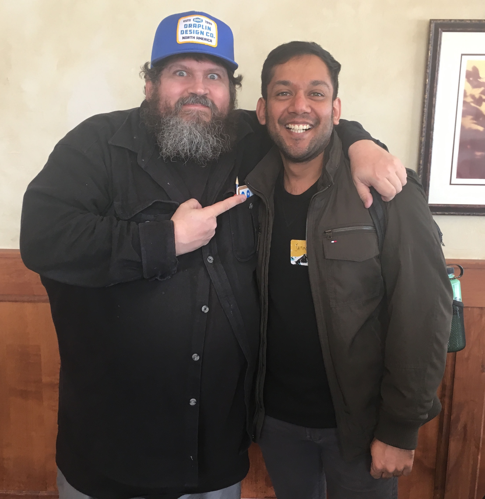
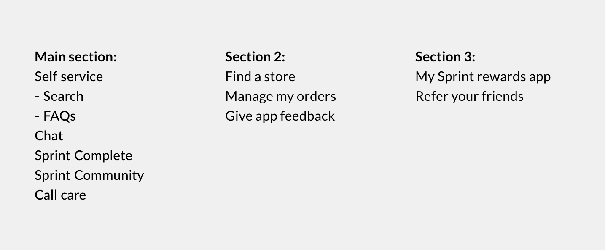
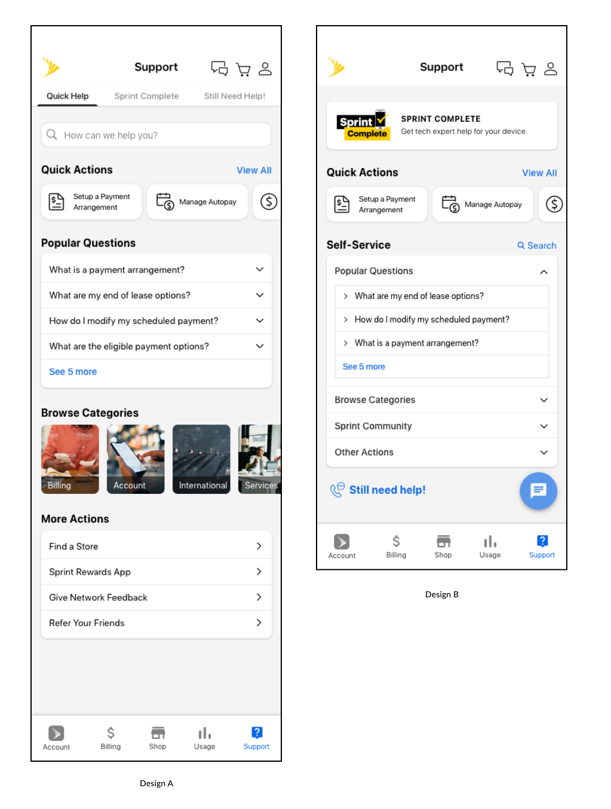
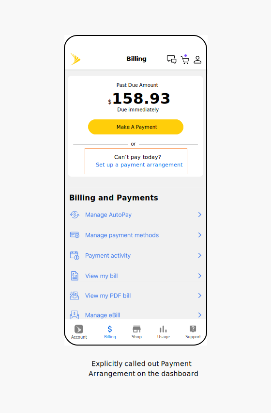
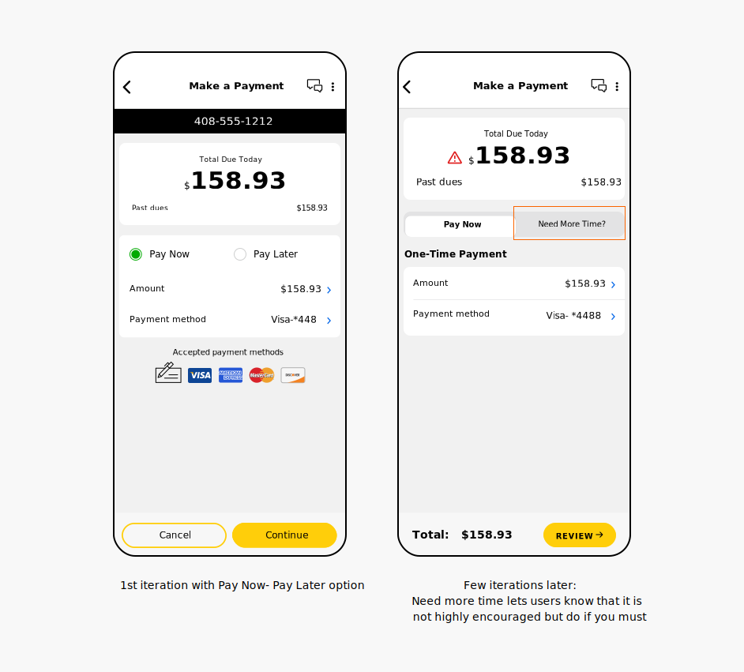
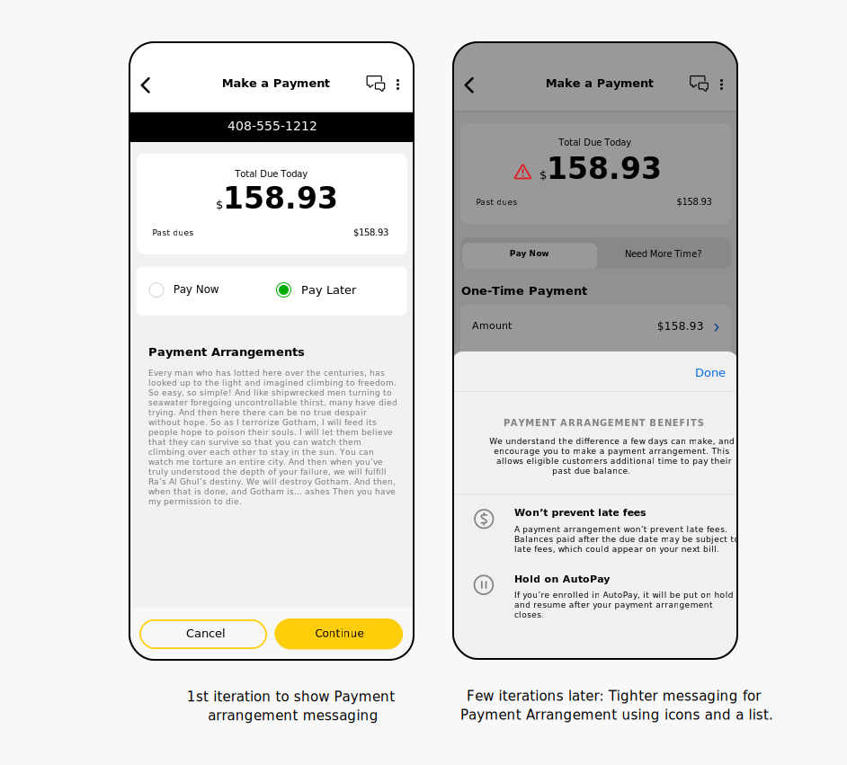
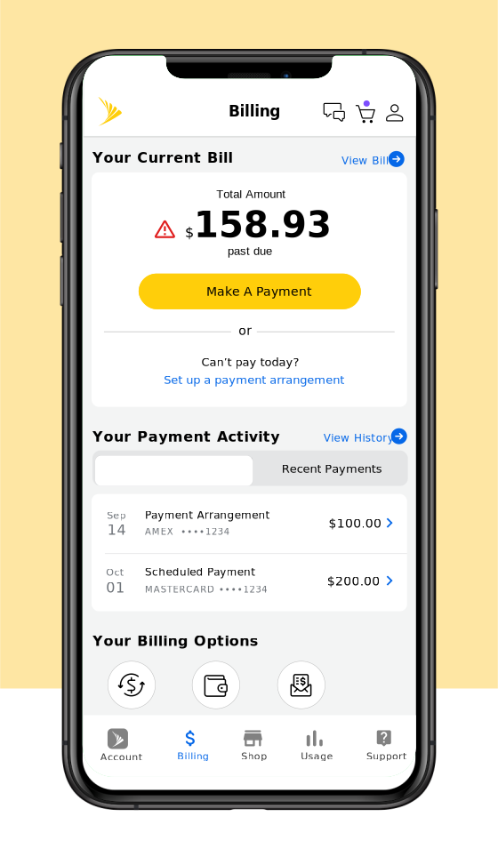
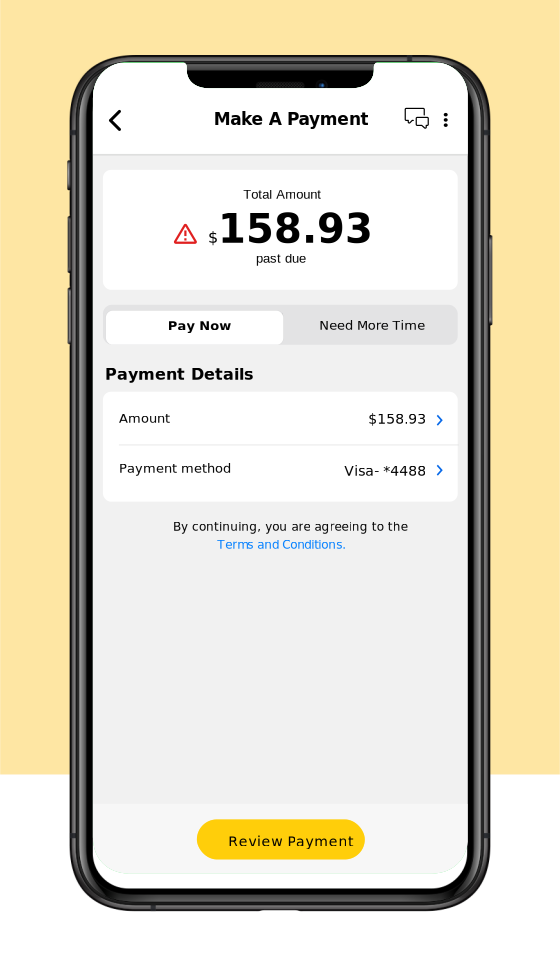
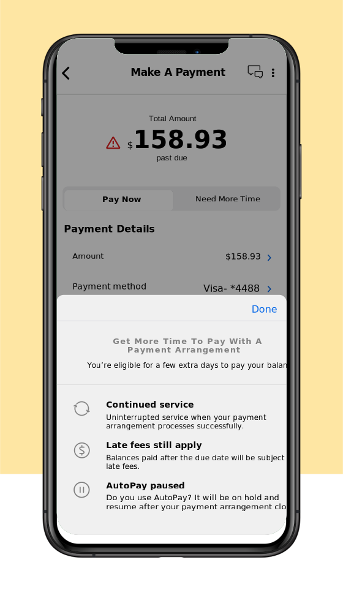
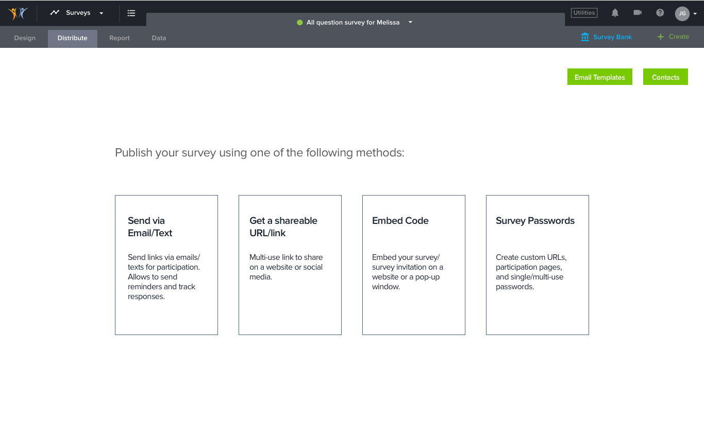

|  |
Hi, my name is Jatin! I am an action-oriented Product Designer based on planet Earth in the Solar System . I possess a diverse set of experience that includes UX designer for an EdTech startup, Augmented reality game designer/developer, UX researcher (accessibility) and UI/front-end developer. With product design, I strive to create experiences that are engaging (taking principles from game design), accessible (everyone in this world is disabled at some point in their lives) and technically feasible (using my development background). Watch me here giving my passion pitch. Currently focused on building and maintaining relationships and doing things that make me afraid. |
"Jatin is a rarity in the UX world being skilled at both research methodologies and high fidelity design output. He is quite a perfectionist and wants to create the best experiences he can while pushing conventional boundaries and advocating for the user."
Keith Farb, Senior Designer at Sprint
"Jatin’ s talent and resiliency were essential during Sprint/T-Mobile’s response to the Covid Pandemic to quickly redesign the payment arrangements journey to better accommodate our customers’ needs."
Chris Hamblin, Director of UX at Sprint
"Jatin was not only a pleasure to be around but also a library of knowledge within the UX realm. Just by talking and working with him on a daily basis ensured that I would without a doubt come home with a new bit of knowledge that I didn't have prior."
James McLain, UI/UX Designer at K12 Insight
"Jatin is a solid and patient design thinker. In my teaching and research work with Jatin, I felt that a cultivated discipline was being truly attentive -- when he works on one thing, his entire focus on that alone."
Prof. Joyojeet Pal, University of Michigan School of Information
Redesigning support page in the My Sprint app
Context
Problem
How might we reorganize the information on the support page to promote self service over calling the customer care?
Goals
Change the user behavior when looking for support to: self-service > Chat > Calling customer care.
Role
Primary Designer and Researcher
Duration
Dec 2019 - Apr 2020
Team
On analyzing the support tab, we found 2 major issues in it.
To get an idea about what is working and what isn't, we decided to conduct an unmoderated user research with the current support page.
Main objectives
Study set up
The research involved a conducting a survey using Userzoom.
We asked questions to identify how users resolved issues currently, their experience with using the support page and preference of how they like to resolve an issue.
It also had a click test to identify where users go to get information on a topic.
Key Insights
Click data on support page
Top 5 searched terms
Top 5 chat intents
They were exactly the same as top searched terms.
Internal BrainstormingWe talked about all this information internally and came up with this priority order.
 Couple of designsAfter some design iterations, we came up with 2 designs. We were confident with the order of sections but were unable to come to a decision on which of these would make it easier for users to find information.
Design A
Separated out the options for Sprint complete and call/chat to different tabs.
Design B
Provided everything on 1 screen with a chat floating button and Sprint complete at the top
To identify which approach works better, we conducted anunmoderated research with our latest designs.
Main objectives
Study set up
We conducted 2 think out loud studies unmoderated using UserZoom.
Pre task questions: How do you resolve issues currently?
3 tasks related to finding information about:
Post task questions: Rank the different issue resolution mediums?
Key Insights
Main support page
Sprint Complete tab
 Retrospective
Retrospective
Understand the business constraints
Redesigning Payment Arrangement flow for the My Sprint app
Context
Problem
How might we make the overall experience of using the Payment arrangement feature more clear and intuitive for users?
Goals
Case study scope
To keep the scope limited, I am only showing the most common use case and the part of the flow which enables users to find Payment arrangement and understand what it is. Link to full flow in the results section. I can share more details upon request.
Role
Primary Designer and Researcher
Duration
Aug - Dec 2019
Team
Scenarios in which users make a payment arrangement
We identified 3 main issues in the flow:
Competitive Analysis
To identify how other companies handle our 2 biggest pain points: the placement of the Payment Arrangement feature and messaging related to it, we looked at some of our direct competitors like T-Mobile/At&t and indirect competitors like other utility companies.
Key Insight #1: Pay Now - Pay Later approach
Few utility companies had a pay now - pay later approach for users who don’t want/can’t pay their bill now. This approach doesn’t require them to have a prior understanding of what a Payment Arrangement is.
Key Insight #2: Succinct messaging for better experience
Both T-mobile and AT&T redirect their users to the FAQs page to learn more about Payment Arrangement. To prevent this break in the experience, we stuck with our current approach of showing messaging at the beginning of the flow but decided to make it more succinct.
Design changesAfter a few brainstorming sessions with the team and going through a few iterations, we came up with these changes to solve the problems identified.
Main dashboard
Pay Now - Need More Time
Showing couple of iterations of the screen.
Messaging for Payment Arrangement
Multiple iterations showing the ways we tried to show payment arrangement messaging.
 Usability TestingIn order to verify our design direction, we conducted an unmoderated user research with our latest designs.
Main objectives
Study set up
The research involved a click test using Userzoom to see how many users click on “Set up a payment arrangement” vs “Make a payment” to enter the Payment arrangement flow.
In the 2nd part of research, users were given a task to set up a payment arrangement for their past due bill with follow up questions to check their understanding.
Key Insights
Main Dashboard
We called out “Set up a payment arrangement” explicitly on the dashboard to improve engagement when a user is past due on their bill. This extra CTA for users who are eligible to make a payment arrangement increases visibility as well.
Pay Now: Need More Time
When the users are past due on their bill, the Segmented control shows “Need More Time” and starts a Payment Arrangement flow. In all other cases, “Pay Later” is shown that allows users to schedule a future dated payment.
Payment Arrangement Messaging
We presented the messaging in a succinct manner using lists and icons. The heading of the list item explains the gist of the information and the description was limited to 2 lines.
 ResultsUsability evaluation and redesign
The publish module within Engage - the survey creation tool of K12 Insight, was a cause for concern due to too many methods of sharing. Additionally, the feature was also cumbersome, demanding a minimum of 4 steps from our users including several questions within to pubish a survey. A hefty demand leading to a hefty dropout rate. It was clear that a redesign of the sharing workflow was needed so that users could launch their surveys as seamlessly as possible.
Note: Since this was an extremely long project, I would only share the workflow of sharing by email. If you’d like to see other workflows, please reach out via email and I’d be happy to share.
Initial GoalMake sharing of a survey easier and faster.
TeamI was the sole designer working on this project along with the project manager and the CEO. Overall the project took around 3 months to complete.
Project constraintsThis was the first iteration I came up with but it was rejected because we are using a similar structure in our dashboard screen where the interactions are completely different. Thus in order to maintain consistent interactions we ended up not using this.
This iteration was rejected purely due to aesthetic reasons. We wanted to move towards a more modern approach of going for a borderless layout and using whitespace to separate out elements.
Both the iterations here were rejected as these gave the impression as if you are filling up a contact form rather than scheduling an email. Additionally, we wanted this part of the workflow to be as familiar to the users as possible.
Being a really long project, it is being shipped in phases and will be shipped entirely in a year or may take even more time.
ReflectionAR game design

To come with a prototype for a game that is fun, engaging, conveys all the learning points and can be tested with the kids at C.S.Mott children’s hospital.
My role

This is the actual kit used by Type 1 diabetic kids. Just by looking at the kit it can become extremely overwhelming for a 8 year old kid.

An insulin pump: currently used by Alexis to calculate the amount of insulin ot give herself.

Glucagon: Whenever the patient’s diabetes becomes too high and gets out of control, glucogon is injected into them to get it back to normal. But it has to be done by someone else.

Educational material provided is too much for a kid to grasp and remember.

We worked in 2-3 week design sprints following a strict agile methodology. At the end of each sprint, we tested the prototype with a participant.
During the sprint, we started off with a brainstorming session, sketching the level design and then prototyping the same in Unity.


Rather than having conventional pets, we decided to have a dragon as a pet.

Having a mini game where the kids would toss the food to boards with a random set of numbers with one of the number being the correct carb amount of the food.

Helping the kids, plan a meal of 100 carbs by making it as a mission of the level

Introduced a timer to have a sense of urgency and a Health Bar to get an accurate feedback of their actions.

Have a set of fireworks to have a sense of accomplishment when a kid completes the level.

The first level acted as a tutorial for the kids in order to adjust them to the game settings.

Explaining the basic concepts such as target blood sugar level, to the kids.

Making the kids remember the carb amount in a food using practical scenarios.

For conducting usability testing of the game, we tested it by making the kids play the game before we received it with the one that we received afterwards and having them take a survey. We conducted this test with 6 target (or close) users.

A list of questions we asked the kids while conducting usability test to measure our initial goals.

After compiling the results of the survey, we were able to increase the engagement by 2.5% and the educational value by 5%.
Next stepsWe had started with the design of next level but due to time restrictions there were many things we would have liked to do but were unable to complete.


Usability evaluation

The Honors program is a department within the College of Literature, Science and the Arts at the University of Michigan. This department maintains the LSA Honors website, which contains information for prospective and current students, faculty and staff, and alumni.
ContextThe Honors program recently shifted its website to a new Content management system. Thus the staff is forced to transfer all the information from the old website to the new website template which has caused problems in the way information is organized and presented.
This problem exacerbated when the number of emails from students unable to find information on the website; to the Honors staff increased. Thus, the staff realized the potential usability issues with the website including confusing navigation and text heaviness on some of the pages.
My roleAs we started, we had the goal of making the LSA Honors website more usable and useful for current students.
Success criteriaReduced number of emails from current students, asking about the information already listed on the website.
ScopingUpon recommendation from the client and the current students being the major users of the website, we decided to narrow down our scope and focus only on the current students’ section.

Method #1 : Interaction Mapping
A static representation of the LSA Honors website highlighted all the possible action states and thus any navigation issues (if 2 actions lead to the same place) with the website.

Method #2 : Interviews
We conducted interviews with 5 current LSA Honors students to find out about the kind of information they look for and the methods employed by them in order to find it.

Method #3 : Comparative analysis
Through this, we wanted to see how other similar websites handle the issues related to information hierarchy, navigation structure etc.

Method #4 : Surveys
To find quantitative data about the information seeking behavior and the overall attitude of current students towards the website. Received a total of 28 responses.
In person help was the most frequently utilized method for finding information on the LSA Honors website.
Method #5 : Heuristic evaluation
Our goal here was to identify usability issues and areas where the site could be improved. We used heuristics like Visibility of System Status, Consistency and Standards, accessibility etc. to conduct our evaluation.

Using WAVE Accessibility system detects issues such as missing alt text, empty heading and links, problematic alt texts, etc.
Method #6 : Usability testing
We conducted usability tests with 5 current students to identify how several features of the website like top-level and side navigation menus, quick links, search bar, accordions, headings etc. are helping the users to find the information they are looking for.
Due to large amounts of text on pages, users used Ctrl+F (browser find functionality) to look for information.
Main findings and recommendationsFinding #1
Navigation terminology could be improved: Information about some topics could be found at more than 2 places which makes it hard for the user to remember where to find it. Also, when asked to find out about the Sophomore Honors award, all our usability test participants looked under Honors Awards and Grants page, which is understandable. However, the information is located under the Sophomore students page or the Honors requirements page.
Recommendations for finding #1

The Graduation for Honors Majors page talks in great detail about the process of completing an Honors Thesis, which is something that users may not be able to guess from the page title.
Finding #2
Unclear information hierarchy on a page, which makes the pages hard to skim and thus relevant information being buried in a heap of text.

Recommendations for finding #2

LSA Sweetland writing center’s website uses bold texts and headings which makes it really easy to locate information.
Finding #3
Accessibility issues - Recently, University of California Berkeley was asked to take off some of its free educational content as it was not accessible to people who were blind, deaf or hard of hearing. Read the complete article here. Owing to that, we checked the website for accessibility standards and found several issues:

Using WAVE Accessibility system detects issues such as missing alt text, empty heading and links, problematic alt texts, etc.In addition, Heading levels are often skipped, and b tags are often used instead of h headings, which keeps screen reader users from skimming the webpage.


Recommendations for finding #3